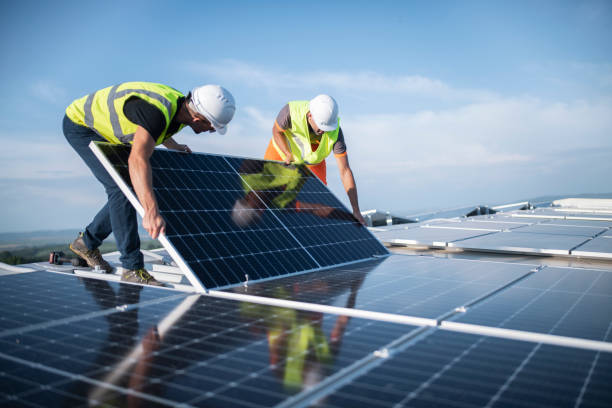

Solar Energy
Solar power is energy from the sun that is converted into thermal or electrical energy. Solar energy is the cleanest and most abundant renewable energy source available. Solar technologies can harness this energy for a variety of uses, including generating electricity, providing light or a comfortable interior environment, and heating water for domestic, commercial, or industrial use.

Solar Technologies
There are three main ways to harness solar energy: photovoltaics, solar heating & cooling, and concentrating solar power. Photovoltaics generate electricity directly from sunlight via an electronic process and can be used to power anything from small electronics such as calculators and road signs up to homes and large commercial businesses. Solar heating & cooling (SHC) and concentrating solar power (CSP) applications both use the heat generated by the sun to provide space or water heating in the case of SHC systems, or to run traditional electricity-generating turbines in the case of CSP power plants.

How solar is used
Solar energy is a very flexible energy technology: it can be built as distributed generation (located at or near the point of use) or as a central-station, utility-scale solar power plant (similar to traditional power plants). Both of these methods can also store the energy they produce for distribution after the sun sets, using cutting edge solar + storage technologies. Solar exists within a complex and interrelated electricity system in the U.S., working alongside other technologies like wind power to transition the U.S. to a clean energy economy.
All of these applications depend on supportive policy frameworks at the local, state and federal level to ensure consumers and businesses have fair access to clean energy technologies like solar.
All of these applications depend on supportive policy frameworks at the local, state and federal level to ensure consumers and businesses have fair access to clean energy technologies like solar.

The solar market today
There are more than 162.8 gigawatts (GW) of solar installed in the U.S., enough to power 29.6 million homes. Over the last decade, the solar market in the United States has grown at an average rate of 24% each year. There are more than 4 million individual solar installations in the U.S., ranging from small home rooftop systems to large utility-scale systems that add hundreds of megawatts of clean electricity to the power grid.